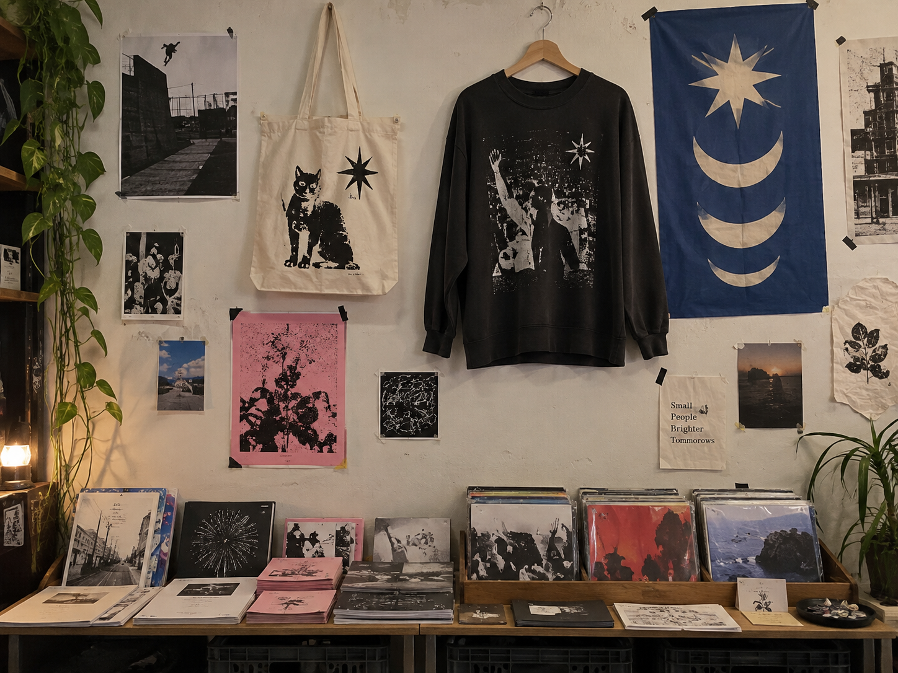
2025 CLUB ZINE ANTHOLOGY
클럽의 비전과 룰, 문화에 관한 정보와 클럽 멤버의 창작 활동에 대한 정보가 있는 매거진입니다. 지난 2025년 클럽 멤버들이 제작한 진을 엮어 아카이빙했습니다.
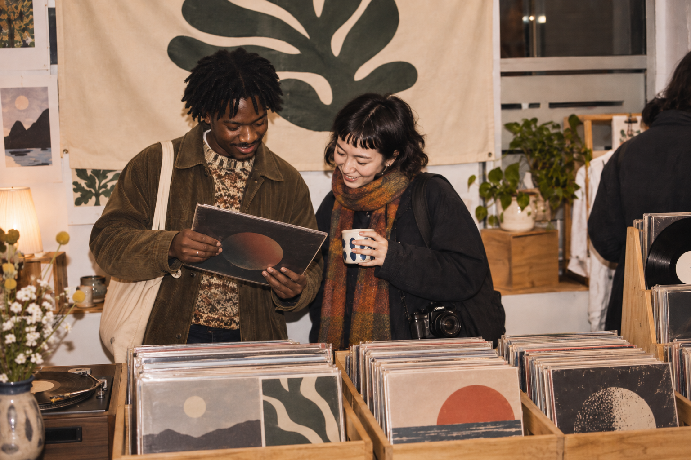
멤버들이 아끼는 숨은 음반과 음악을 소개하고 이야기하는 모임입니다.
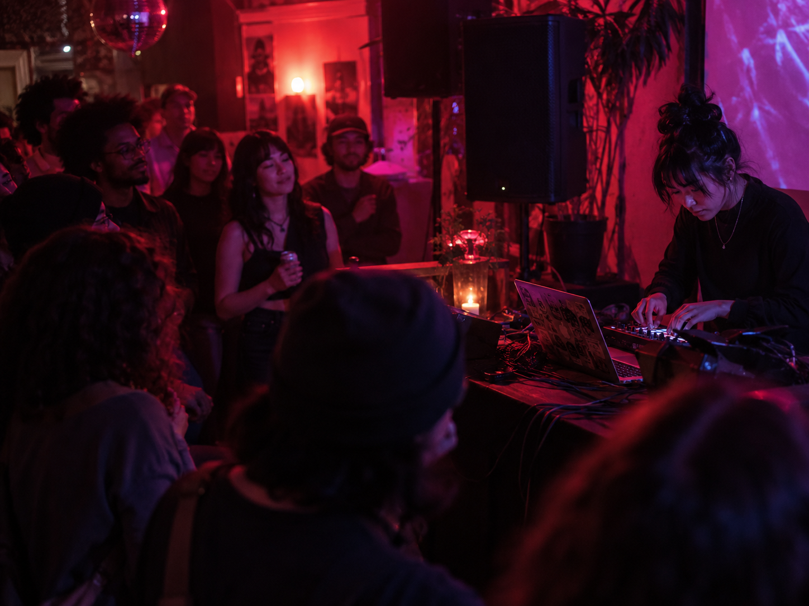
멤버들이 직접 만든 음악을 함께 듣고 이야기하는 감상회입니다.
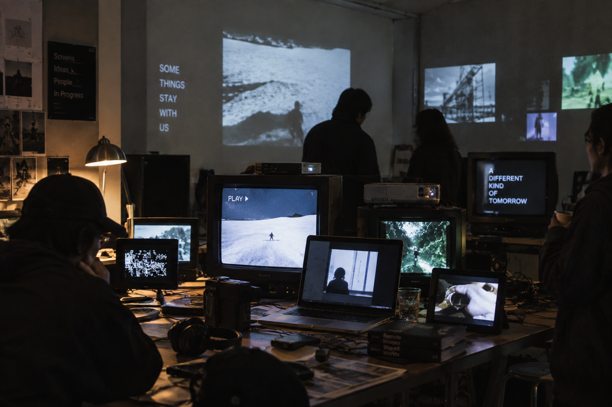
영상, 웹페이지, 이미지 등 각자의 화면 작업을 함께 보는 임시 전시입니다.
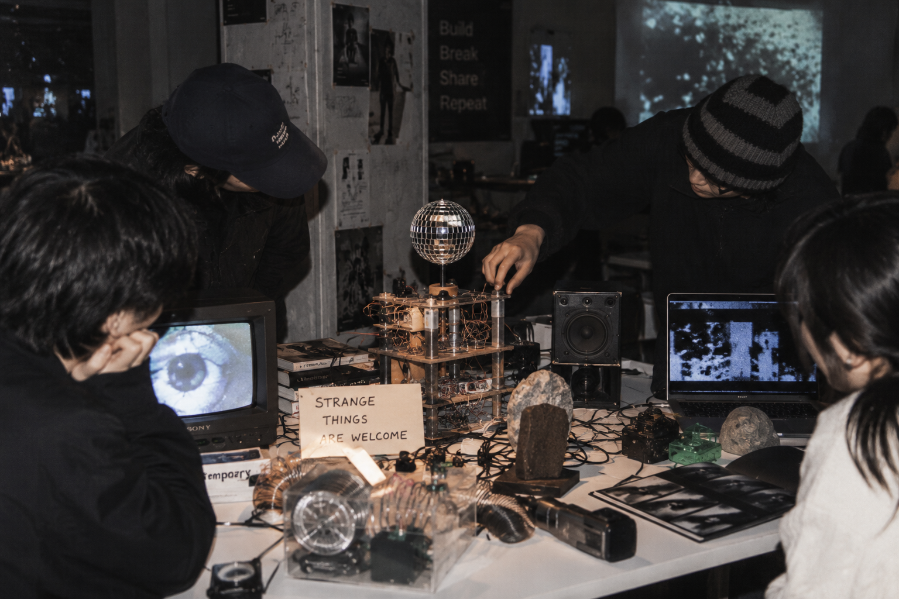
미완성 작업과 실험적인 제작물을 가져와 서로 보여주는 모임입니다.
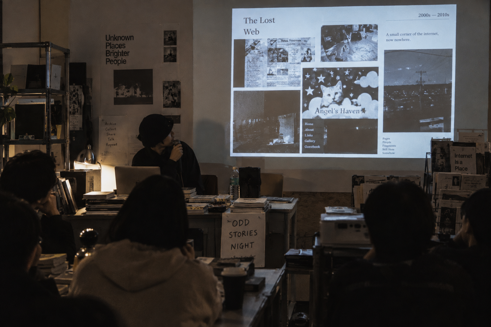
낯선 문화와 잘 알려지지 않은 이야기를 짧게 소개하고 나누는 모임입니다.
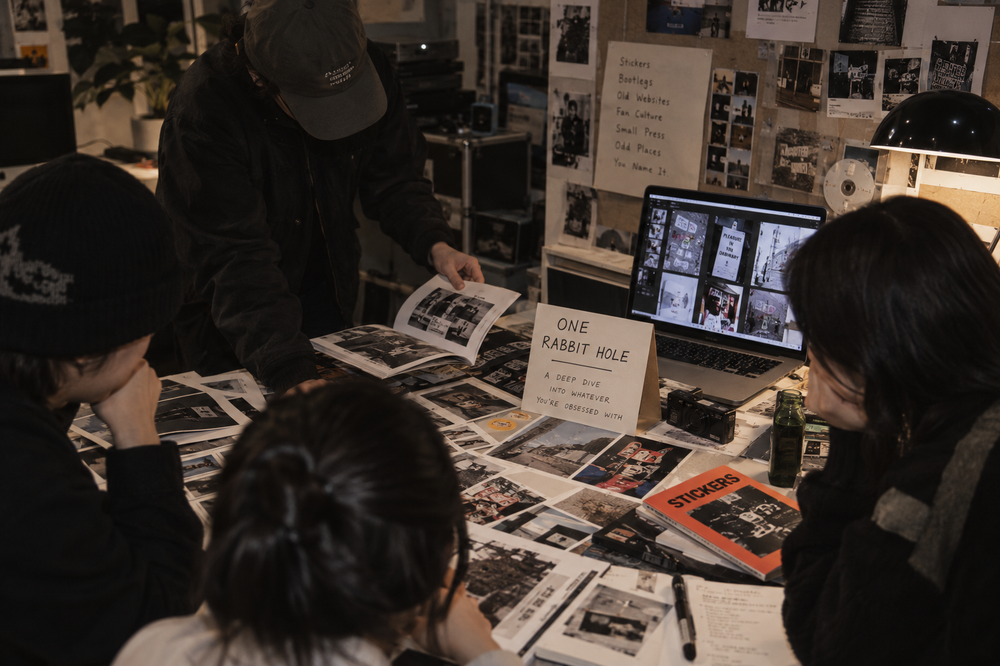
하나의 관심사를 이미지와 자료로 깊게 파고들어 소개하는 리서치 세션입니다.

클럽의 비전과 룰, 문화에 관한 정보와 클럽 멤버의 창작 활동에 대한 정보가 있는 매거진입니다. 지난 2025년 클럽 멤버들이 제작한 진을 엮어 아카이빙했습니다.
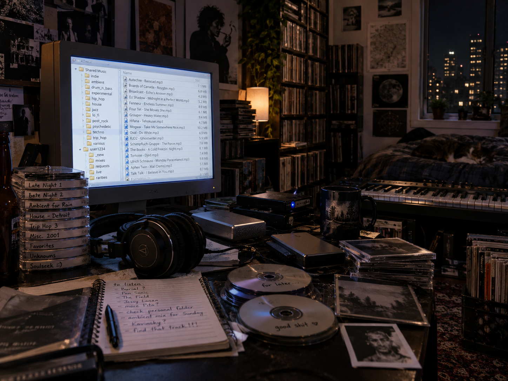
Soulseek의 개인 라이브러리와 파일 공유 문화를 따라가며, 사람의 폴더를 통해 새로운 음악을 발견하던 방식을 기록했습니다. 스트리밍 이전과 이후에도 남아 있는 비공식 음악 유통과 취향의 연결을 살펴봅니다.
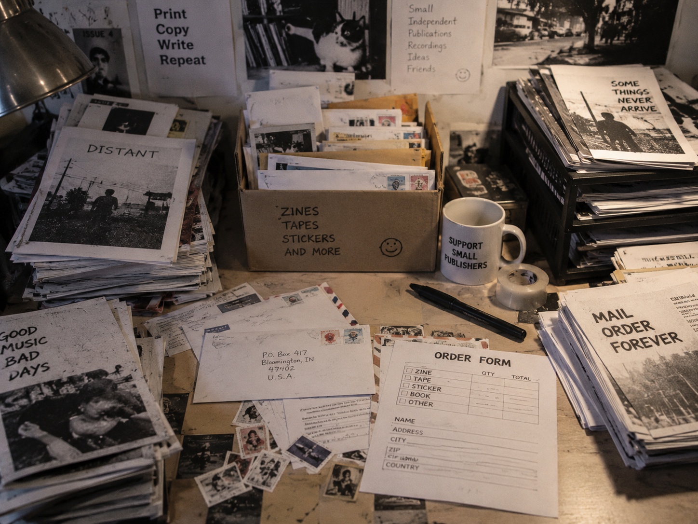
우편 주문서와 P.O. Box, 복사한 카탈로그를 통해 오가던 팬진의 유통 방식을 정리했습니다. 온라인 이전 작은 출판물들이 봉투와 인서트를 통해 독자와 장면을 연결하던 문화를 기록했습니다.
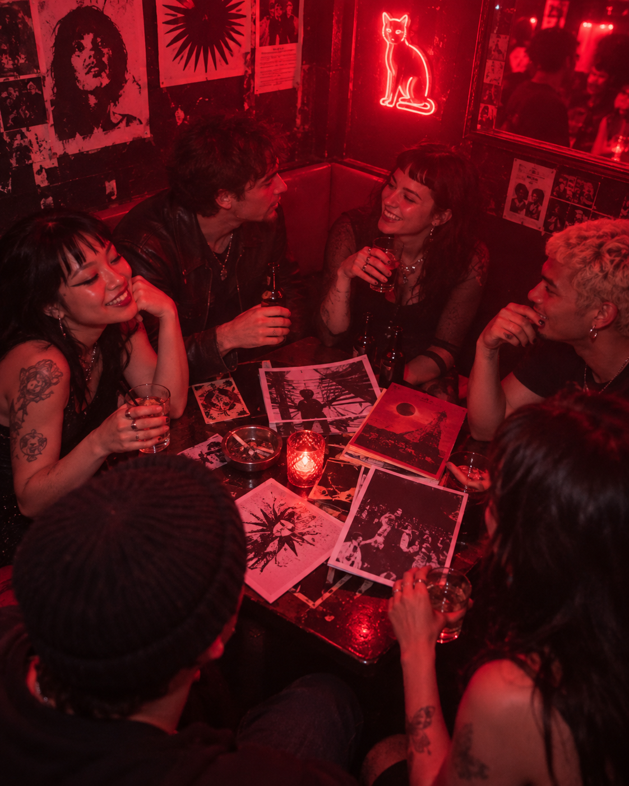
각자의 수집한 영상 파편들을 하나의 맥락으로 접합했던 오프라인 조립 워크숍의 결과물입니다.
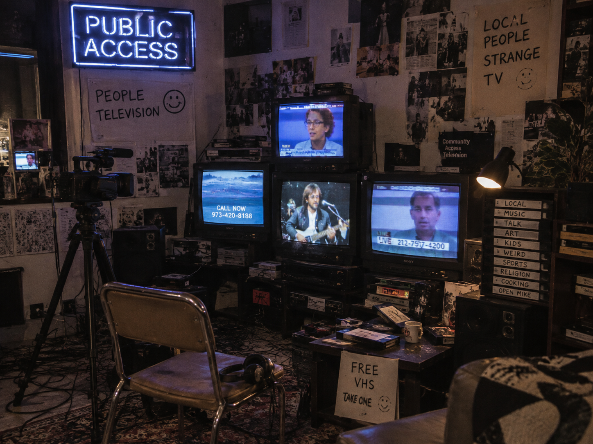
미국 퍼블릭 액세스 TV에 남은 저예산 방송과 지역 기반의 독특한 프로그램들을 모아 살펴봤습니다. 완성도보다 참여와 개성이 앞섰던 DIY 방송 문화와 그 화면의 미학을 기록했습니다.